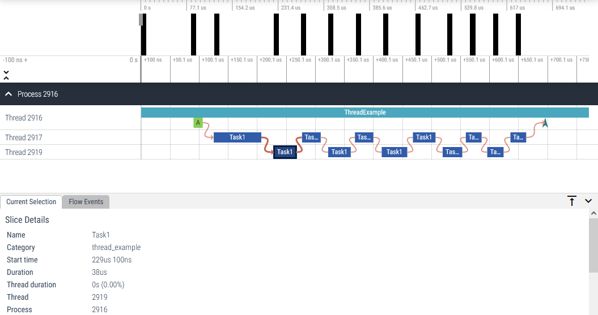

Tracing
About
libbase library comes with an implementation of Tracing Events from Chromium
[1] which can be placed inside your code to generate tracing report
which in turn can be viewed with:
(Legacy) Catapult Trace Viewer
Note
The above link is to the currently available CTV. If this changes, you can still access it through Perfetto UI by clicking Open with legacy UI.
All tracing-related APIs are exposed through macros which names start with
TRACE_. This allows you to disable tracing completely (e.g. in final-release
builds).
When used (and enabled), they will collect tracing data during runtime which you
can dump to any std::ostream stream (file, console, etc.) or directly to a
file. This will dump all tracind data in JSON format as specified in the
Trace Event Format .
Caution
Currently, libbase has only a basic implementation which might not be
suitable for use in production code (or at least shippable in release
builds). Some configuration options (e.g. runtime filtering by category
names) are not yet implemented and both performance and memory-usage overhead
of current implementation might be noticably bigger than from the original
Chromium’s tracing system implementation. For now, we recommend enabling them
only when needed (e.g. for debugging sessions).
See also
See Configuration options page for details on available configuration options.
Tracing APIs
-
TRACE_EVENT(categories, name, ...)
-
TRACE_EVENT_BEGIN(categories, name, ...)
-
TRACE_EVENT_END(categories, name, ...)
-
TRACE_EVENT_ASYNC_BEGIN(categories, name, id, ...)
-
TRACE_EVENT_ASYNC_END(categories, name, id, ...)
-
TRACE_EVENT_ASYNC_STEP(categories, name, id, ...)
-
TRACE_EVENT_WITH_FLOW_BEGIN(categories, name, id, ...)
-
TRACE_EVENT_WITH_FLOW_END(categories, name, id, ...)
-
TRACE_EVENT_WITH_FLOW_STEP(categories, name, id, ...)
-
TRACE_COUNTER(categories, name, arg1_key, arg1_value, ...)
-
TRACE_COUNTER_ID(categories, name, id, arg1_key, arg1_value, ...)
-
TRACE_SIGNAL(categories, name, ...)
-
TRACE_SIGNAL_PROCESS(categories, name, ...)
-
TRACE_SIGNAL_THREAD(categories, name, ...)
-
TRACE_NAME_PROCESS(name)
-
TRACE_NAME_THREAD(name)
-
TRACE_EVENT_FLUSH_TO_FILE(file)
-
TRACE_EVENT_FLUSH_TO_STREAM(stream)
Example
This is an example of tracing generated by the Simple example and rendered by the Perfetto UI:
{kind=link}